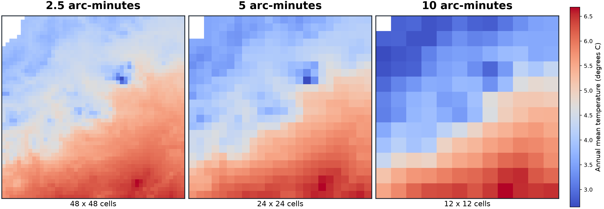

Finding and extracting environmental values at species occurrence sites
Lecture 05 · Fall 2026
Today’s questions
How does a raster represent continuous environmental variation?
How do resolution, extent, alignment, and NoData affect an analysis?
Which environmental covariates make biological sense for our study?
Types of spatial data
Vector are shapes (boundaries or objects) Rasters are georeferenced numerical arrays
Vector
Points, lines, polygons
Separate objects with attributes
Useful for occurrences and boundaries
Raster
Regular grid of cells
One value per band per cell
Useful for climate, elevation, and land cover
Raster anatomy
A cell is an area, not a point
6.4°C
Every location inside one cell is represented by the same stored value.
The value may be observed, interpolated, modeled, classified, or summarized.
Metadata
Five properties define the grid
CRSHow coordinates locate the raster on Earth
ResolutionCell width and height in coordinate units
ExtentThe outer bounds of the raster
AlignmentWhether cell edges and centers coincide
NoDataCells that do not contain a valid measurement
Shape tells us the number of bands, rows, and columns.
Resolution
Finer cells retain more spatial variation

Actual WorldClim BIO1 values, aggregated to illustrate coarser grids
Scale
2.5 arc-minutes is angular resolution
0.04167° × 0.04167°
At Maine’s latitude, a cell is roughly 3 km east–west and 4.6 km north–south.
Cell width changes with latitude
Many occurrence points share one climate value
Extent and clipping
Keep the study area, preserve the grid
Global raster8,640 columns × 4,320 rows
→
Maine boundaryVector mask from Maine GeoLibrary
→
Maine rasterAbout 101 columns × 109 rows
Clipping changes extent and shape. It should not change CRS or resolution.
Alignment
Same resolution does not guarantee same cells
Same CRS
Same resolution
Same extent or compatible overlap
Same cell origin and boundaries
If grids are offset, row 20 / column 30 refers to different ground locations.
NoData
Missing is not zero
0°C
A valid temperature
0 mm
A valid precipitation value
NoData
No valid value for the cell
Think about a few ways we could deal with No Data?
WorldClim 2.1
Climate normals (averages), not weather observations
1970–2000Temporal coverage
19Bioclimatic variables
2.5′Resolution used here
GlobalOriginal extent
WorldClim refers to the actual spatial database and repository created by researchers to provide interpolated global weather grids. WorldClim calculates and distributes the 19 BIOCLIM along with many other raw climate datasets.
Long-term summaries derived from interpolated monthly temperature and precipitation.
BIOCLIM: Refers to the specific metrics (Bio 1 through Bio 19) derived from monthly temperature and rainfall to represent annual trends, seasonality, and extreme environmental limits (e.g., Annual Mean Temperature or Precipitation of the Wettest Quarter).
A climatic extreme may be more limiting than an annual average.
Coastline detail differs between raster and boundary
The nearest cell center falls over ocean
Coordinate uncertainty places the point near a cell edge
The source raster has no valid estimate at that location
Inspect the spatial pattern of missing values before deciding what to do.
Selecting predictors based on ecological meaning: a matter for debate
Should one choose predictors from hypotheses? Or just use all available predictors?
Activity
Mean temperature may constrain seasonal activity.
Tolerance
Warmest or coldest extremes may limit survival.
Moisture
Precipitation may relate to breeding habitat and desiccation risk.
Selection of environmental predictors is still a topic of debate. In the prior two papers we read the authors either used all available predictors or removed correlated predictors. What do you think is the best method and how would you evaluate/justify this method?
Correlation of bioclim variables
Some bioclim variables are strongly correlated (encode similar gradients)
BIO1
BIO5
BIO6
BIO12
BIO1
1.00
0.91
0.95
−0.18
BIO5
0.91
1.00
0.76
−0.09
BIO6
0.95
0.76
1.00
−0.21
BIO12
−0.18
−0.09
−0.21
1.00
Illustrative matrix: students will calculate correlations from their extracted table.
Whether correlation among environmental predictors is a 'problem' is very method dependent. It's important to be aware of the constraints of the SDM method you are using, and to account for predictor correlation if necessary.
Time
Occurrence dates and climate normals answer different questions
WorldClim
1970–2000 average conditions
GBIF records
Many dates, often more recent
Extraction describes the site’s historical climatic context. It does not recreate weather on the observation date.
Takeaways for the lab exercise
Raster values are only meaningful with context
Inspect the grid before using it.
Align spatial data before comparing or extracting.
Clip spatial data to the region of interest (improve performance).
Sample Environmental data at occurrence records of interest.
Next: open the lab and turn these principles into an occurrence–environment table.